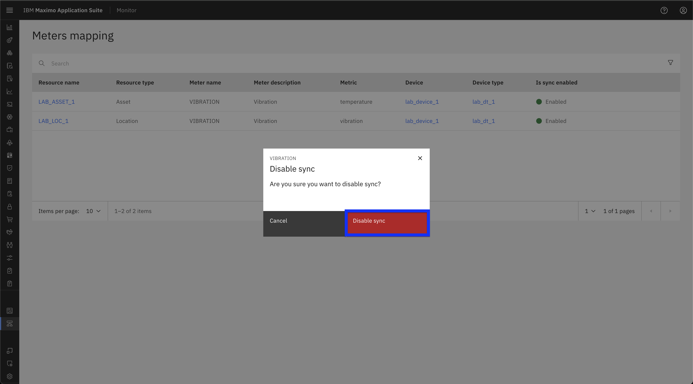
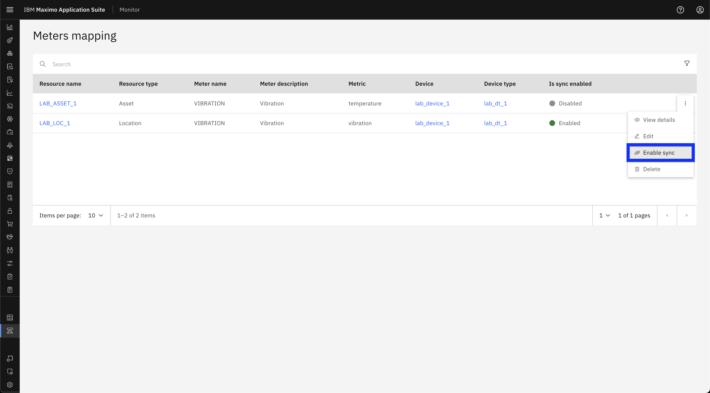

Objectives
In this Exercise you will learn how to:
- Toggle sync enable/disable for Meter/Metrics Mappings
Before you begin:
This Exercise requires that you have:
- completed the pre-requisites required for all labs
- completed the previous exercises
Disable Sync
-
Navigate to the Meter Mappings page in the MAS Monitor UI. refer to previous exercise.
-
Click the three-dot menu next to the meter mapping you want to modify.
-
From the dropdown, select Disable Sync.

-
Confirm the action by clicking Disable sync. 
-
Verify that the sync status has been updated accordingly in the Meter Mappings table.

Enable Sync
-
Navigate to the Meter Mappings page in the MAS Monitor UI. refer to previous exercise.
-
Click the three-dot menu next to the meter mapping you want to modify.
-
From the dropdown, select Enable Sync. 
-
Confirm the action by clicking Enable sync.

-
Verify that the sync status has been updated accordingly in the Meter Mappings table.

Expected Outcome:
- If sync is enabled, the meter mapping will begin pushing data to the meter.
- If sync is disabled, data will no longer be pushed.
- Confirm that the sync status is updated in the Meter Mappings table.
🎉 Congratulations! You have successfully learn how to toggle sync enable/disable for meter/metric mappings.